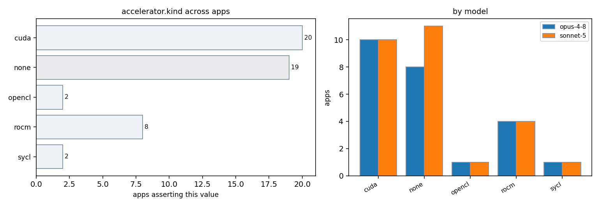

| app / variant | opus-4-8 | sonnet-5 | evidence |
|---|---|---|---|
| AMG2023:cuda | cuda | cuda | CMakeLists.txt:50-57 (CUDA toolkit + cusparse/cublas) amg.c:144 (HYPRE_USING_CUDA) amg.c:360 (hypre_bind_device(myid, num_procs, comm) called before HYPRE_Init, binds one MPI rank to one GPU device) |
| AMG2023:rocm | — | rocm | CMakeLists.txt:23,60-69 (AMG_WITH_HIP option, find_package(hip), links hip::device, roc::rocsparse, roc::rocrand) Makefile:52-56 (HYPRE_HIP_PATH/HYPRE_HIP_LIBS -lamdhip64 -lrocsparse -lrocrand) |
| AMG:threaded-mpi | none | none | absent: cuda|hip|__global__|nccl in source tree (only doc word-match, no kernels) absent: cuda|hip|sycl|opencl in src tree (parcsr_ls/, parcsr_mv/, seq_mv/, test/) |
| Kripke:kripke.exe:cuda | — | cuda | src/Kripke.h:116-134 (RAJA::cuda_exec, CudaKernel usage gated by KRIPKE_USE_CUDA) cmake/kripke/CMakeLists.txt (ENABLE_CUDA option); host-configs/llnl-toss4-H100-cuda12-clang-vector.cmake:20-23 (ENABLE_CHAI On, ENABLE_CUDA On, ENABLE_MPI On) |
| Kripke:kripke.exe:rocm | — | rocm | src/Kripke.h:137-146 (RAJA::hip_exec, hip_block_x_loop etc under KRIPKE_USE_HIP) host-configs/llnl-toss4-MI300A-rocm6-adams.cmake:32-35 (ENABLE_CHAI On, ENABLE_HIP On, ENABLE_OPENMP Off, ENABLE_MPI On) |
| Kripke:kripke:cuda | cuda | — | src/Kripke/Kernel.h:44-45 (cuda_exec) src/Kripke/SweepSolver.cpp:83-84 (RAJA::synchronize cuda_synchronize) |
| Kripke:kripke:rocm | rocm | — | src/Kripke/Kernel.h:46-47 (hip_exec) src/Kripke/SweepSolver.cpp:85-86 (RAJA::synchronize hip_synchronize) |
| Kripke:mpi-gpu-aware | cuda | — | cmake/kripke/CMakeLists.txt:216-248 (CUDA or HIP backend selected) src/Kripke/Kernel.h:44-47 (cuda/hip exec) |
| Kripke:threaded | none | — | absent: cuda|hip|sycl exec in OpenMP-only build; src/Kripke/Kernel.h:48-49 (seq fallback when no CUDA/HIP) |
| Quicksilver:cuda | cuda | cuda | src/Makefile:42 (HAVE_CUDA enables Cuda build) src/main.cc:126,193 (CUDA kernel launch syntax) src/Makefile:208 (CXX=nvcc) |
| Quicksilver:rocm | rocm | rocm | src/Makefile:44-45,110-115 (HAVE_HIP, --offload-arch=gfx90a AMD build) src/Makefile:110-115 (-DHAVE_HIP --offload-arch=gfx90a) src/gpuPortability.hh:38-44 (CONCAT(__PREFIX, MallocManaged) etc. abstracts cuda/hip calls) |
| Quicksilver:threaded-mpi | none | — | absent: cudaMalloc|hipMalloc|__global__ compiled in cpu path; src/main.cc:227 uses cpu OpenMP case only |
| Quicksilver:threaded-mpi-cpu | — | none | absent: HAVE_CUDA|HAVE_HIP|HAVE_OPENMP_TARGET active in the plain GCC/Intel/BGQ Makefile examples (src/Makefile:129-270 show CPU-only sample configs with only HAVE_MPI/HAVE_OPENMP defined) |
| STREAM:stream_c.exe:threaded | none | none | absent: cuda|hip|acc in stream.c absent: cuda|hip|sycl|opencl in stream.c, stream.f |
| hpl:mpi | — | none | absent: cuda|CUDA|nvcc|hip|ROCM|gpu in src/,include/,testing/ (only unrelated binary www/mat2.jpg hit) |
| hpl:mpi-cpu | none | — | absent: cuda|cublas|hip|rocblas|sycl|opencl in src/ and configure.ac (only dgemm_ CPU BLAS in acinclude.m4:13-43) |
| hypre:cuda | cuda | — | src/CMakeLists.txt:168 (HYPRE_ENABLE_CUDA); src/configure:1589 (cuSPARSE default YES with CUDA) |
| hypre:mpi-cpu-boomeramg | — | none | absent: cudaMalloc|hipMalloc|cuSolver|__global__ in src/parcsr_ls/par_relax.c|par_cycle.c|par_coarsen.c (this CPU trace excludes the *_device.c GPU kernel files such as par_relax_device.c, par_coarsen_device.c) |
| hypre:mpi-cuda-boomeramg | — | cuda | src/docs/usr-manual/ch-misc.rst:383-394 (CUDA/HIP/SYCL are mutually exclusive backend build options) |
| lammps:cuda-kokkos | cuda | — | cmake/presets/kokkos-cuda.cmake:5 (Kokkos_ENABLE_CUDA ON) doc/src/Speed_kokkos.rst:38 (CUDA for NVIDIA GPUs) |
| lammps:gpu-kokkos-reaxff | — | cuda | src/KOKKOS/pair_reaxff_kokkos.h:14-18 (device/host Kokkos pair style templates -> CUDA/HIP/SYCL backend selectable at build time) doc/src/Speed_kokkos.rst:57-69 (NVIDIA CUDA and AMD ROCm HIP support for Kokkos build) |
| lammps:reaxff | — | none | absent: MPI_Comm_split_type|MPI_Win_allocate_shared in src/REAXFF/ and src/OPENMP/ (no shared memory windows found in manual file scan) src/KOKKOS/pair_reaxff_kokkos.h absent cuda calls in base REAXFF path |
| lammps:rocm-kokkos | rocm | — | cmake/presets/kokkos-hip.cmake:7 (Kokkos_ENABLE_HIP ON) doc/src/Speed_kokkos.rst:39 (HIP for AMD GPUs) |
| miniFE:cuda | cuda | — | cuda/src/Makefile:40 (nvcc gencode compute_35) cuda/src/CudaELLMatrix.hpp:150 (thrust::device_vector) |
| miniFE:miniFE:mpi | — | none | absent: cuda|hip|sycl|opencl in ref/src/ |
| miniFE:miniFE:threaded-mpi | — | none | absent: cuda|hip|sycl|opencl in openmp-opt-knl/src|openmp/src (excluding basic/optional/cuda unused-by-default path) |
| miniFE:mpi-cuda | — | cuda | cuda/src/CudaNode.cpp / CudaNode.cuh (device kernels, __global__) cuda/src/Makefile:40 (NVCCFLAGS gencode=arch=compute_35 - CUDA build) |
| mixbench:cpu | — | none | absent: cuda|hip|sycl|opencl in mixbench-cpu/ |
| mixbench:cuda | cuda | cuda | mixbench-cuda/main-cuda.cpp:12-13 (cuda.h, cuda_runtime.h) mixbench-cuda/mix_kernels_cuda.cu:98 (kernel launch) mixbench-cuda/main-cuda.cpp:12-13,81 (cuda.h, cuda_runtime.h, cudaSetDevice) |
| mixbench:opencl | opencl | opencl | mixbench-opencl/mix_kernels.cl mixbench-opencl/loclutil.h:50 (clGetDeviceIDs) mixbench-opencl/loclutil.h:31-60 (clGetPlatformIDs/clGetDeviceIDs OpenCL API) |
| mixbench:rocm | rocm | rocm | mixbench-hip/main-hip.cpp:27 (hipSetDevice) mixbench-hip/lhiputil.h (HIP utilities) mixbench-hip/mix_kernels_hip.cpp:134-176 (hipExtLaunchKernelGGL/HIP kernel API) |
| mixbench:sycl | sycl | sycl | mixbench-sycl/main-sycl.cpp:8 (lsyclutil.h) mixbench-sycl/mix_kernels_sycl.cpp:162 (sycl::queue) mixbench-sycl/lsyclutil.h:16-36 (sycl::device, platform info retrieval) |
| mixbench:threaded | none | — | absent: cuda|hip|sycl|opencl in mixbench-cpu |
| osu-micro-benchmarks:cpu | — | none | absent: cuda|hip|CUDA_ENABLED|rocm_smi in c/mpi/collective/blocking/osu_allreduce.c |
| osu-micro-benchmarks:mpi-cpu | — | none | absent: cuda|hip|sycl|opencl in c/mpi/pt2pt/standard/osu_bw.c (accel init is optional and guarded by options.accel==NONE path used by default host build) c/mpi/pt2pt/standard/osu_bw.c:48-53 (init_accel() only called if options.accel != NONE, default is host buffers) |
| osu-micro-benchmarks:mpi-cuda | — | cuda | configure.ac:42-51,346 (--with-cuda / --enable-cuda defines _ENABLE_CUDA_) c/mpi/pt2pt/standard/osu_bw.c:48-53 (init_accel() called when options.accel != NONE) |
| osu-micro-benchmarks:osu_allreduce:cuda | — | cuda | c/mpi/collective/blocking/osu_allreduce.c:45-50 (init_accel() called if options.accel != NONE) configure.ac:32-40 (--enable-cuda configure flag builds CUDA support) |
| osu-micro-benchmarks:osu_allreduce:mpi | none | — | c/mpi/collective/blocking/osu_allreduce.c:45-50 (accel only if options.accel != NONE; default host) absent: cudaMalloc|hipMalloc in c/mpi/collective/blocking/osu_allreduce.c |
| osu-micro-benchmarks:osu_bw:mpi | none | — | absent: cudaMalloc active path when accel==NONE in c/mpi/pt2pt/standard/osu_bw.c:48-53 (CUDA/OpenACC gated behind options.accel, default off) |
| osu-micro-benchmarks:osu_bw:mpi-cuda-aware | cuda | — | configure.ac:32-40 (--enable-cuda) README.md:1046 (MV2_USE_CUDA=1 osu_bw D H) |
| osu-micro-benchmarks:osu_latency:cuda | — | cuda | c/mpi/pt2pt/standard/osu_latency.c:47-52 (init_accel() called when options.accel != NONE) configure.ac:32-40 (--enable-cuda builds CUDA-capable benchmarks) |
| osu-micro-benchmarks:osu_latency:mpi-cuda-aware | cuda | — | configure.ac:32-40 (--enable-cuda sets NVCC) README.md:1040 (MV2_USE_CUDA=1 osu_latency D D) |